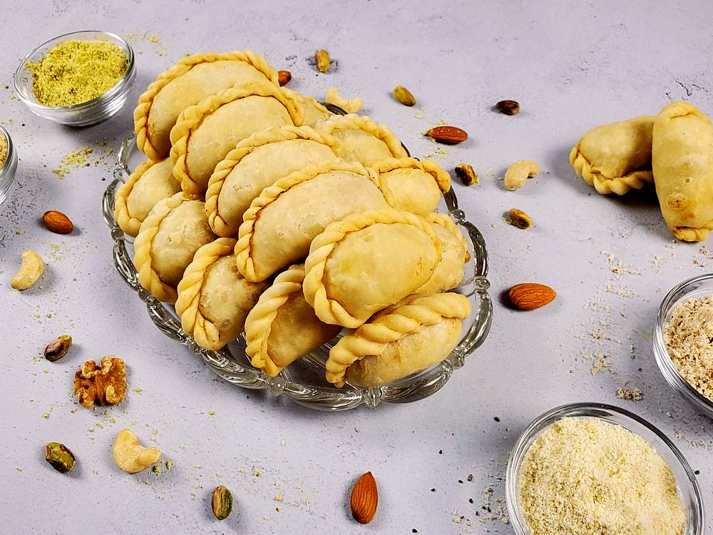

Prep35 min
Cook30 min
Active65 min
Plus30 min resting
Serves16
Difficultymoderate
Contains: milk, gluten, tree nuts
Checked against the ingredient list for ten allergens: milk, egg, fish, crustaceans, tree nuts, peanuts, sesame, mustard, soy and gluten. Brands vary, so read the label on anything new to you.
Ingredients
Quantities for 16.
- 300g Maida
- 60g for the dough, plus 2 tbsp for the filling Ghee
- 100g Rava
- 80g, grated Coconut
- 100g, crumbled Khoyaoptional
- 150g, ground Sugar
- 6 pods, seeds ground Cardamom
- 40g, chopped Almonds
- 30g Raisins
- 500ml for deep frying Neutral Oil
- as needed Water
Cookware
stovetop, kadhai
Before you start
- Also called gujiya further north. The dough is short with ghee so the shell stays crisp rather than chewy.
- The filling must be cold before it goes in, or the seal opens in the oil.
Method
- Rub the 60g ghee into the flour until it clumps, then bring together with cold water into a firm dough. Rest 30 minutes.
- Roast the rava in 2 tbsp ghee until it smells nutty. Add the coconut and roast 2 minutes more.
- Take off the heat, stir in the khoya, sugar, cardamom, almonds and raisins, and cool completely.
- Roll small discs, place filling on one half, wet the rim and fold over. Press out any air and crimp firmly.Trapped air expands and bursts the seam. Press it out as you fold.
- Fry on medium-low until pale gold and blistered, about 5 minutes.Low and slow. High heat browns the shell before the pastry cooks through.
- Drain and cool completely.
Storage
Keeps 10 days in an airtight tin at room temperature. If you used khoya, refrigerate after 3 days.
Nutrition Good estimate
Low protein: 5 g a serving, 8% of the calories
| Per serving58 g | Per 100 g | |
|---|---|---|
| Calories | 267 kcal | 460 kcal |
| Protein | 5.1 g | 9 g |
| Carbohydrate | 33.4 g | 58 g |
| of which sugars | 13.5 g | 23 g |
| Fibre | 1.6 g | 3 g |
| Fat | 12.9 g | 22 g |
| of which saturated | 5.4 g | 9 g |
| of which unsaturated | 6.7 g | 12 g |
Estimated from raw ingredients using USDA FoodData Central.
Times, yields, allergens and nutrition are guidance. Use your own judgement on doneness and on storing. More in About.